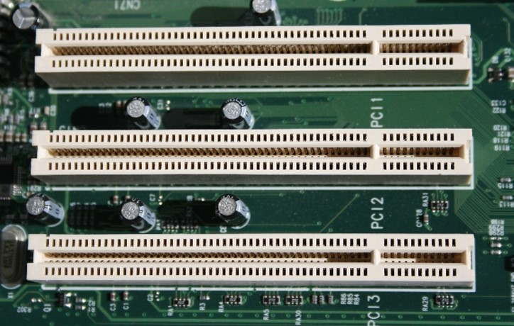
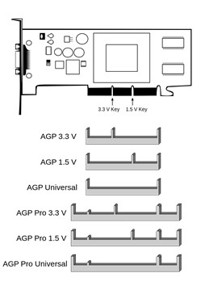
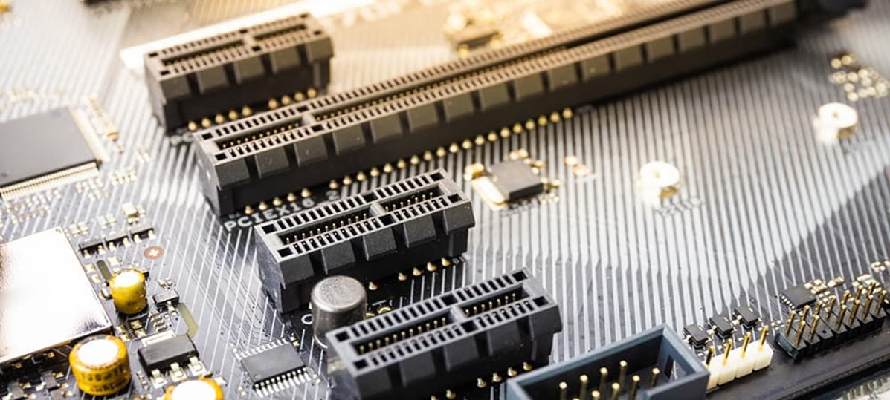

A videokártya, vagy rövidítve VGA (Video Graphics Array), video adapter, grafikus kártya vagy grafikus adapter a számítógép része. A számítógép által küldött képi információkat feldolgozza, és egy megjelenítő egység számára értelmezhető jelekké alakítja át. Ez az egység lehet CRT monitor, LCD monitor, LCD modul, HDTV vagy kivetítő is. A grafikus kártya és a megjelenítő különböző grafikus szabványok szerint kommunikálhat egymással. A videokártya a kivitelezés alapján lehet alaplapra integrált vagy bővítőkártya.
Sorozatgyártásban a videokártya elvét elsőként 1977-ben az Apple II mikroszámítógép konstrukciójánál alkalmazták, melynek alaplapjára integrált képmegjelenítési lehetőségeit bővítőkártyák által lehetett kiegészíteni. Az első IBM PC 1981-ben kiadott típusában alkalmazott MDA (Monochrome Display Adapter) videokártya csupán az egyszínű, 80x25 karakteres megjelenítést tette lehetővé. Ezt követően az IBM CGA (Color Graphics Adapter) és a Hercules 1982-ben megjelent HGC (Hercules Graphics Card) videokártyái már a színes szövegkarakterek megjelenítését is támogatták.
Hercules grafikus kártya
PCI (Peripherial Component Interconnect) a CPU és a perifériák összekötésére szolgáló processzorfüggetlen adatút (sín, busz), 64 bit/33 MHz,120 MB/s. A PCI első változata 32 bites, és szinkronműködésű volt. A Pentium- hoz illeszkedve megjelent a 64 bites PCI busz. A processzorhoz illesztéséhez külön vezérlőáramkör szükséges.
PCI foglalat egy alaplapon
Az AGP az angol Accelerated Graphics Port rövidítéséből származik, ami gyorsított grafikus portot jelent. A segítségével lehetőség nyílt arra, hogy a nagy képek megjelenítéséhez a kártya processzora a rendszermemóriát is használatba vegye. 4x gyorsabb a PCI sínnél. Mivel a 3D-s megjelenítés évről-évre több memóriát igényelt, a grafikus kártyák frame bufferének (képernyőmemória) memóriakapacitása egyre kevésbé volt elég. Az AGP alapjaiban a PCI buszrendszerre épít, de utóbbival szemben kifejezetten két végpont közti kommunikációra, a grafikus kártya és a processzor közötti nagysebességű átvitelre lett optimalizálva.
AGP foglalat és alfajtái
A PCI Express (PCIe) az AGP és a PCI egyik utódja. A PCIe a PCI-hoz hasonlóan az OSI modell alsó négy rétegét implementálja (Fizikai, Adatkapcsolati, Hálózati és Szállítási réteg), legfelső réteg megvalósítása a két sín esetén kompatibilis, így az alkalmazások mindkét esetben ugyanazt a folytonos címzési modellt használhatják. A PCIe esetében a fizikai adatátvitel nagysebességű soros kapcsolaton keresztül történik, szemben a PCI sínnel, ahol 32- vagy 64 bites párhuzamos sínt alkalmaznak. A PCI-nál az eszközök osztoznak a sínen, míg a PCI Expressnél egy kapcsolón keresztül érik el (point-to-point síntopológia) a sínt (minden eszköz úgy látja, mintha saját külön sínnel rendelkezne. A kapcsoló gondoskodik a point-to-point kapcsolatok létrehozásáról és vezérli a sín adatforgalmát.
PCIe foglalat a számítógép alaplapon